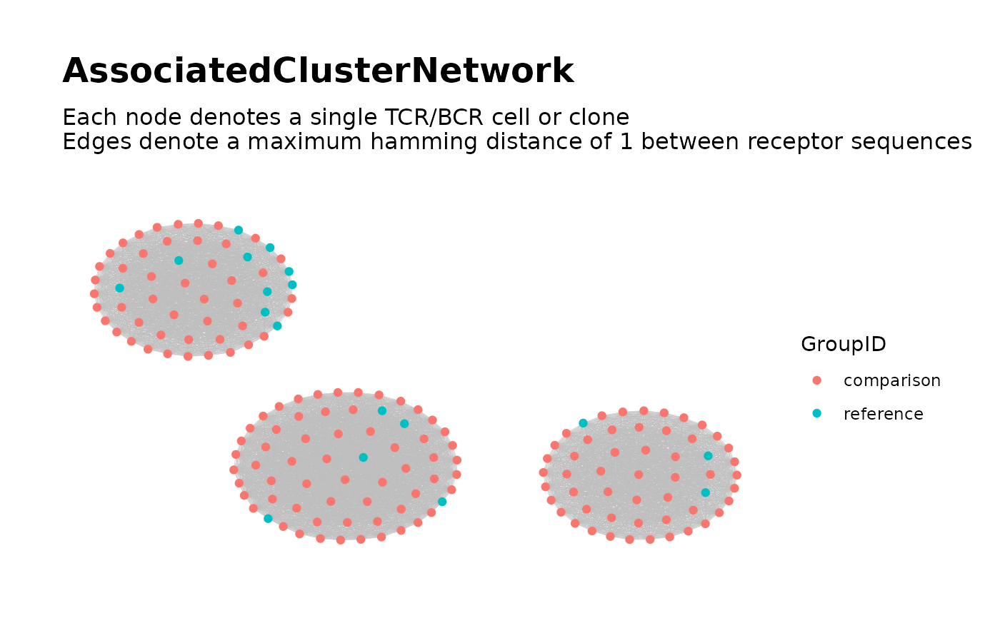

Identify TCR/BCR Clones in a Neighborhood Around Each Associated Sequence
findAssociatedClones.RdPart of the workflow
Searching for Associated TCR/BCR Clusters.
Intended for use following findAssociatedSeqs and prior to
buildAssociatedClusterNetwork.
Given multiple samples of bulk Adaptive Immune Receptor Repertoire Sequencing (AIRR-Seq) data and a vector of associated sequences, identifies for each associated sequence a global "neighborhood" comprised of clones with TCR/BCR sequences similar to the associated sequence.
Usage
findAssociatedClones(
## Input ##
file_list, input_type,
data_symbols = NULL,
header = TRUE, sep = "",
sample_ids =
paste0("Sample", 1:length(file_list)),
subject_ids = NULL,
group_ids,
seq_col,
assoc_seqs,
## Neighborhood Criteria ##
nbd_radius = 1,
dist_type = "hamming",
min_seq_length = 6,
drop_matches = "[*|_]",
## Output ##
subset_cols = NULL,
output_dir =
file.path(getwd(), "associated_neighborhoods"),
output_type = "csv",
verbose = FALSE
)Arguments
- file_list
A vector of file paths where each file contains the AIRR-Seq data for a sample, with observations indexed by row. Passed to
loadDataFromFileList.- input_type
A character string specifying the file format of the sample data files. Options are
"table","txt","tsv","csv","rds"and"rda". Passed toloadDataFromFileList.- data_symbols
Used when
input_type = "rda". Specifies the name of each sample's data frame within its respective Rdata file. Passed toloadDataFromFileList.- header
Used for certain values of
input_type. Passed toloadDataFromFileList.- sep
Used for certain values of
input_type. Passed toloadDataFromFileList.- sample_ids
A character or numeric vector of sample IDs, whose length matches that of
file_list.- subject_ids
An optional character or numeric vector of subject IDs, whose length matches that of
file_list. Used to assign a subject ID to each sample.- group_ids
A character or numeric vector of group IDs whose length matches that of
file_list. Used to assign each sample to a group. The two groups represent the levels of the binary variable of interest.- seq_col
Specifies the column of each sample's data frame containing the TCR/BCR sequences. Accepts either the column name or column index.
- assoc_seqs
A character vector containing the TCR/BCR sequences associated with the binary variable of interest.
- nbd_radius
The maximum distance (based on
dist_type) between an associated sequence and other TCR/BCR sequences belonging to its neighborhood. Lower values require sequences to be more similar to an associated sequence in order to belong to its neighborhood.- dist_type
Specifies the function used to quantify the similarity between sequences. The similarity between two sequences determines their pairwise distance, with greater similarity corresponding to shorter distance. Valid options are
"hamming"(the default), which useshamDistBounded, and"levenshtein", which useslevDistBounded.- min_seq_length
Clones with TCR/BCR sequences below this length will be removed. Passed to
filterInputDatawhen loading each sample.- drop_matches
Passed to
filterInputData. Accepts a regular expression (seeregex). Checks TCR/BCR sequences for a pattern match usinggrep. Those returning a match are dropped. By default, sequences containing either of the characters*or_are dropped.- subset_cols
Controls which columns of the AIRR-Seq data from each sample are included in the output. Accepts a vector of column names or a vector of column indices. The default
NULLincludes all columns. Passed tofilterInputData.- output_dir
A file path to a directory for saving the output. A valid output directory is required, since no output is returned in R. The specified directory will be created if it does not already exist.
- output_type
A character string specifying the file format to use for saving the output. Valid options include
"csv","tsv","rds"and"rda".- verbose
Logical. If
TRUE, additional console output will be printed reporting the number of clones in each sample belonging to the neighborhood for each associated sequence, as well as the total number of clones in each neighborhood across all samples.
Details
For each associated sequence, its neighborhood is defined to include all
clones with TCR/BCR sequences that are sufficiently similar to the associated
sequence. The arguments dist_type and nbd_radius control how the
similarity is measured and the degree of similarity required for neighborhood
membership.
For each associated sequence, a data frame is saved to an individual file.
The data frame contains one row for each clone in the associated sequence's
neighborhood (from all samples). It includes variables for sample ID, group ID
and (if provided) subject ID, as well as variables from the AIRR-Seq data.
Each neighborhood's file is named as its associated sequence, followed by the
file extension based on output_type.
The files saved by this function are intended for use with
buildAssociatedClusterNetwork. See the
Searching for Associated TCR/BCR Clusters
article on the package website for more details.
References
Hai Yang, Jason Cham, Brian Neal, Zenghua Fan, Tao He and Li Zhang. (2023). NAIR: Network Analysis of Immune Repertoire. Frontiers in Immunology, vol. 14. doi: 10.3389/fimmu.2023.1181825
Searching for Associated TCR/BCR Clusters article on package website
Author
Brian Neal (Brian.Neal@ucsf.edu)
Examples
## Simulate 30 samples from two groups (treatment/control) ##
samples_c <- samples_t <- 15 # Number of samples by control/treatment group
samples <- samples_c + samples_t
sample_size <- 30 # (seqs per sample)
base_seqs <- # first five are associated with treatment
c("CASSGAYEQYF", "CSVDLGKGNNEQFF", "CASSIEGQLSTDTQYF",
"CASSEEGQLSTDTQYF", "CASSPEGQLSTDTQYF",
"RASSLAGNTEAFF", "CASSHRGTDTQYF", "CASDAGVFQPQHF")
# Relative generation probabilities by control/treatment group
pgen_c <- matrix(rep(c(rep(1, 5), rep(30, 3)), times = samples_c),
nrow = samples_c, byrow = TRUE)
pgen_t <- matrix(rep(c(1, 1, rep(1/3, 3), rep(2, 3)), times = samples_t),
nrow = samples_t, byrow = TRUE)
pgen <- rbind(pgen_c, pgen_t)
simulateToyData(
samples = samples,
sample_size = sample_size,
prefix_length = 1,
prefix_chars = c("", ""),
prefix_probs = cbind(rep(1, samples), rep(0, samples)),
affixes = base_seqs,
affix_probs = pgen,
num_edits = 0,
output_dir = tempdir(),
no_return = TRUE
)
#> [1] TRUE
## Step 1: Find Associated Sequences ##
sample_files <-
file.path(tempdir(),
paste0("Sample", 1:samples, ".rds")
)
group_labels <- c(rep("reference", samples_c),
rep("comparison", samples_t))
associated_seqs <-
findAssociatedSeqs(
file_list = sample_files,
input_type = "rds",
group_ids = group_labels,
seq_col = "CloneSeq",
min_seq_length = NULL,
drop_matches = NULL,
min_sample_membership = 0,
pval_cutoff = 0.1,
outfile = NULL
)
#> Data contains 30 samples, 15 of which belong to group reference and 15 of which belong to group comparison.
#> >>> Loading and compiling data from all samples:
#> Loading sample 1: Input data contains 30 rows.
#> Loading sample 2: Input data contains 30 rows.
#> Loading sample 3: Input data contains 30 rows.
#> Loading sample 4: Input data contains 30 rows.
#> Loading sample 5: Input data contains 30 rows.
#> Loading sample 6: Input data contains 30 rows.
#> Loading sample 7: Input data contains 30 rows.
#> Loading sample 8: Input data contains 30 rows.
#> Loading sample 9: Input data contains 30 rows.
#> Loading sample 10: Input data contains 30 rows.
#> Loading sample 11: Input data contains 30 rows.
#> Loading sample 12: Input data contains 30 rows.
#> Loading sample 13: Input data contains 30 rows.
#> Loading sample 14: Input data contains 30 rows.
#> Loading sample 15: Input data contains 30 rows.
#> Loading sample 16: Input data contains 30 rows.
#> Loading sample 17: Input data contains 30 rows.
#> Loading sample 18: Input data contains 30 rows.
#> Loading sample 19: Input data contains 30 rows.
#> Loading sample 20: Input data contains 30 rows.
#> Loading sample 21: Input data contains 30 rows.
#> Loading sample 22: Input data contains 30 rows.
#> Loading sample 23: Input data contains 30 rows.
#> Loading sample 24: Input data contains 30 rows.
#> Loading sample 25: Input data contains 30 rows.
#> Loading sample 26: Input data contains 30 rows.
#> Loading sample 27: Input data contains 30 rows.
#> Loading sample 28: Input data contains 30 rows.
#> Loading sample 29: Input data contains 30 rows.
#> Loading sample 30: Input data contains 30 rows.
#> All samples loaded.
#> Extracting list of unique sequences... Done. 8 unique sequences present.
#> Computing sample membership (this may take a while)... Done.
#> Filtering by Fisher's exact test P-value... Done. 4 sequences remain.
#> All done. Sorting results by Fisher's exact test P-value and returning.
head(associated_seqs)
#> ReceptorSeq fisher_pvalue shared_by_n_samples samples_g0 samples_g1
#> 8 CSVDLGKGNNEQFF 1.052106e-05 18 3 15
#> 7 CASSGAYEQYF 1.157316e-04 17 3 14
#> 4 CASSEEGQLSTDTQYF 5.197401e-03 10 1 9
#> 5 CASSIEGQLSTDTQYF 6.559548e-02 16 5 11
#> label
#> 8 Sequence present in 18 samples (3 in group reference, 15 in group comparison)\nFisher's exact test P-value: 1.05e-05
#> 7 Sequence present in 17 samples (3 in group reference, 14 in group comparison)\nFisher's exact test P-value: 0.000116
#> 4 Sequence present in 10 samples (1 in group reference, 9 in group comparison)\nFisher's exact test P-value: 0.0052
#> 5 Sequence present in 16 samples (5 in group reference, 11 in group comparison)\nFisher's exact test P-value: 0.0656
## Step 2: Find Associated Clones ##
findAssociatedClones(
file_list = sample_files,
input_type = "rds",
group_ids = group_labels,
seq_col = "CloneSeq",
assoc_seqs = associated_seqs$ReceptorSeq,
min_seq_length = NULL,
drop_matches = NULL,
output_dir = tempdir()
)
#> <<< Beginning search for associated clones >>>
#> Processing sample 1 of 30 (Sample1):
#> Input data contains 30 rows.
#> Finding clones in a neighborhood of each associated sequence... Done.
#> Processing sample 2 of 30 (Sample2):
#> Input data contains 30 rows.
#> Finding clones in a neighborhood of each associated sequence... Done.
#> Processing sample 3 of 30 (Sample3):
#> Input data contains 30 rows.
#> Finding clones in a neighborhood of each associated sequence... Done.
#> Processing sample 4 of 30 (Sample4):
#> Input data contains 30 rows.
#> Finding clones in a neighborhood of each associated sequence... Done.
#> Processing sample 5 of 30 (Sample5):
#> Input data contains 30 rows.
#> Finding clones in a neighborhood of each associated sequence... Done.
#> Processing sample 6 of 30 (Sample6):
#> Input data contains 30 rows.
#> Finding clones in a neighborhood of each associated sequence... Done.
#> Processing sample 7 of 30 (Sample7):
#> Input data contains 30 rows.
#> Finding clones in a neighborhood of each associated sequence... Done.
#> Processing sample 8 of 30 (Sample8):
#> Input data contains 30 rows.
#> Finding clones in a neighborhood of each associated sequence... Done.
#> Processing sample 9 of 30 (Sample9):
#> Input data contains 30 rows.
#> Finding clones in a neighborhood of each associated sequence... Done.
#> Processing sample 10 of 30 (Sample10):
#> Input data contains 30 rows.
#> Finding clones in a neighborhood of each associated sequence... Done.
#> Processing sample 11 of 30 (Sample11):
#> Input data contains 30 rows.
#> Finding clones in a neighborhood of each associated sequence... Done.
#> Processing sample 12 of 30 (Sample12):
#> Input data contains 30 rows.
#> Finding clones in a neighborhood of each associated sequence... Done.
#> Processing sample 13 of 30 (Sample13):
#> Input data contains 30 rows.
#> Finding clones in a neighborhood of each associated sequence... Done.
#> Processing sample 14 of 30 (Sample14):
#> Input data contains 30 rows.
#> Finding clones in a neighborhood of each associated sequence... Done.
#> Processing sample 15 of 30 (Sample15):
#> Input data contains 30 rows.
#> Finding clones in a neighborhood of each associated sequence... Done.
#> Processing sample 16 of 30 (Sample16):
#> Input data contains 30 rows.
#> Finding clones in a neighborhood of each associated sequence... Done.
#> Processing sample 17 of 30 (Sample17):
#> Input data contains 30 rows.
#> Finding clones in a neighborhood of each associated sequence... Done.
#> Processing sample 18 of 30 (Sample18):
#> Input data contains 30 rows.
#> Finding clones in a neighborhood of each associated sequence... Done.
#> Processing sample 19 of 30 (Sample19):
#> Input data contains 30 rows.
#> Finding clones in a neighborhood of each associated sequence... Done.
#> Processing sample 20 of 30 (Sample20):
#> Input data contains 30 rows.
#> Finding clones in a neighborhood of each associated sequence... Done.
#> Processing sample 21 of 30 (Sample21):
#> Input data contains 30 rows.
#> Finding clones in a neighborhood of each associated sequence... Done.
#> Processing sample 22 of 30 (Sample22):
#> Input data contains 30 rows.
#> Finding clones in a neighborhood of each associated sequence... Done.
#> Processing sample 23 of 30 (Sample23):
#> Input data contains 30 rows.
#> Finding clones in a neighborhood of each associated sequence... Done.
#> Processing sample 24 of 30 (Sample24):
#> Input data contains 30 rows.
#> Finding clones in a neighborhood of each associated sequence... Done.
#> Processing sample 25 of 30 (Sample25):
#> Input data contains 30 rows.
#> Finding clones in a neighborhood of each associated sequence... Done.
#> Processing sample 26 of 30 (Sample26):
#> Input data contains 30 rows.
#> Finding clones in a neighborhood of each associated sequence... Done.
#> Processing sample 27 of 30 (Sample27):
#> Input data contains 30 rows.
#> Finding clones in a neighborhood of each associated sequence... Done.
#> Processing sample 28 of 30 (Sample28):
#> Input data contains 30 rows.
#> Finding clones in a neighborhood of each associated sequence... Done.
#> Processing sample 29 of 30 (Sample29):
#> Input data contains 30 rows.
#> Finding clones in a neighborhood of each associated sequence... Done.
#> Processing sample 30 of 30 (Sample30):
#> Input data contains 30 rows.
#> Finding clones in a neighborhood of each associated sequence... Done.
#> >>> Done processing samples. Compiling results:
#> Gathering data from all samples for sequence 1 (CSVDLGKGNNEQFF)... Done.
#> Gathering data from all samples for sequence 2 (CASSGAYEQYF)... Done.
#> Gathering data from all samples for sequence 3 (CASSEEGQLSTDTQYF)... Done.
#> Gathering data from all samples for sequence 4 (CASSIEGQLSTDTQYF)... Done.
#> >>> All tasks complete. Output is contained in the following directory:
#> /tmp/Rtmpzg712i
## Step 3: Global Network of Associated Clusters ##
associated_clusters <-
buildAssociatedClusterNetwork(
file_list =
file.path(tempdir(), paste0(associated_seqs$ReceptorSeq, ".csv")),
seq_col = "CloneSeq",
size_nodes_by = 1.5,
output_dir = tempdir()
)
#> <<< Building network of associated clones >>>
#> Input data contains 202 rows.
#> Computing network edges based on a max hamming distance of 1... Done.
#> Network contains 202 nodes.
#> Computing cluster membership within the network... Done.
#> Computing node-level network statistics... Done.
#> Computing statistics for the 3 clusters in the network... Done.
#> Generating graph plot with nodes colored by GroupID...
#> Done.
#> Node-level meta-data saved to file:
#> /tmp/Rtmpzg712i/AssociatedClusterNetwork_NodeMetadata.csv
#> Cluster-level meta-data saved to file:
#> /tmp/Rtmpzg712i/AssociatedClusterNetwork_ClusterMetadata.csv

#> Network graph plots saved to file:
#> /tmp/Rtmpzg712i/AssociatedClusterNetwork.pdf
#> Network igraph saved in edgelist format to file:
#> /tmp/Rtmpzg712i/AssociatedClusterNetwork_EdgeList.txt
#> Adjacency matrix saved to file:
#> /tmp/Rtmpzg712i/AssociatedClusterNetwork_AdjacencyMatrix.mtx
# clean up temp directory
file.remove(
file.path(tempdir(),
c(paste0("Sample", 1:samples, ".rds"),
paste0(associated_seqs$ReceptorSeq, ".csv"),
"AssociatedClusterNetwork_NodeMetadata.csv",
"AssociatedClusterNetwork_ClusterMetadata.csv",
"AssociatedClusterNetwork.pdf",
"AssociatedClusterNetwork_EdgeList.txt",
"AssociatedClusterNetwork_AdjacencyMatrix.mtx"
)
)
)
#> [1] TRUE TRUE TRUE TRUE TRUE TRUE TRUE TRUE TRUE TRUE TRUE TRUE TRUE TRUE TRUE
#> [16] TRUE TRUE TRUE TRUE TRUE TRUE TRUE TRUE TRUE TRUE TRUE TRUE TRUE TRUE TRUE
#> [31] TRUE TRUE TRUE TRUE TRUE TRUE TRUE TRUE TRUE